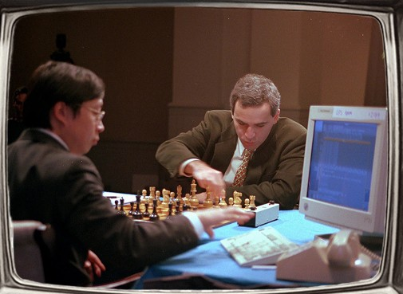
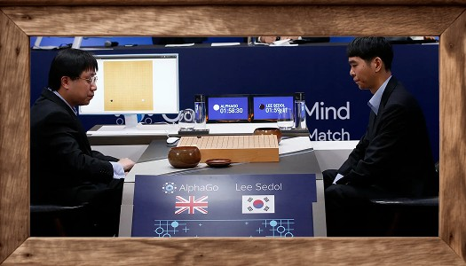
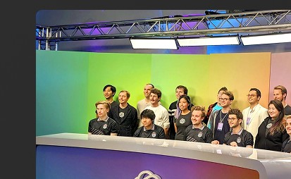

¿Qué te gustaría explorar primero?
Descubramoslo juntos
La máquina no requería intervención humana, detectaba y ejecutaba jugadas concretas. Seguía comandos
Primera victoria de una máquina contra un campeón mundial. Deep Blue ganó 3,5–2,5. Destacaba su capacidad de Cálculo

Fragmento de Ronda 6
Elegí tu jugada:
Una IA usa la “intuición” basada en búsqueda de redes y reglas para ganarle a un profesional de Go.

Colocá una pieza ●
Probabilidad de las jugadas
(Jugada 37 en el torneo)1/10.000 jugadas humanas
La IA superó a 4 jugadores profesionales de Poker, un juego conocido por tener información oculta. La IA aprendió de ellos
Apuestas en el torneo
La IA controlaba los 5 personajes diferentes mediante una red neuronal, venciendo a un equipo profesional con su capacidad de aprender jugando contra sí mismo

Cantidad de Partidas jugadas